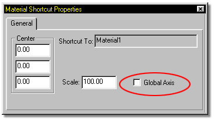

Typically a Material is meant to look like a solid texture that a model is
made from, and stay firmly attached to that object as is moves and rotates around
the scene. This connection of the Material to the object is called Local
Coordinates, and is the default method of computing Materials.
Typically a Material is meant to look like a solid texture that a model is
made from, and stay firmly attached to that object as is moves and rotates around
the scene. This connection of the Material to the object is called Local
Coordinates, and is the default method of computing Materials.
Sometimes it is desirable to have a Material travel along an objects surface when the object moves or rotates. To create the look of fog, for example, you could put a noise combiner texture on an object and check the Global Axis box on the Properties Panel. This would give the appearance that the Material and the object are not attached, and that the object was moving through the fog.
The Global Axis check box appears on the Properties Panel when a shortcut to a material is clicked in the Project Workspace.

Tell Me About:
Material List
Creating a New Material
Adding an Existing Material
Removing a Material
Material Types